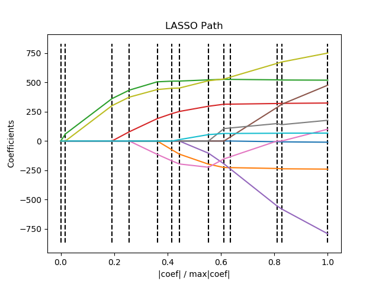

Note
Click here to download the full example code
使用最小角回归(LARS)求解的Lasso算法的正则化路径¶
在糖尿病数据集(diabetes dataset)上，使用LARS算法 沿着正则化参数计算 Lasso Path。 每种颜色代表系数向量的不同特征, 并且被展示为正则化参数 alpha 的一个函数。
(译者注：感觉这个图画的有问题，按照这个代码的画法，横坐标只是绝对归一化的系数，纵坐标是没有绝对归一化的系数， 它根本就没有从 lars_path 这个函数接受 正则化参数 alpha 的值。 lars_path这个函数返回的第一个就是 alpha， 它却没有接受，o(︶︿︶)o 唉)
Out:
Computing regularization path using the LARS ...
.
print(__doc__)
# Author: Fabian Pedregosa <fabian.pedregosa@inria.fr>
# Alexandre Gramfort <alexandre.gramfort@inria.fr>
# License: BSD 3 clause
# 翻译者： Antares 博士
import numpy as np
import matplotlib.pyplot as plt
from sklearn import linear_model
from sklearn import datasets
diabetes = datasets.load_diabetes()
X = diabetes.data
y = diabetes.target
print("Computing regularization path using the LARS ...")
_, _, coefs = linear_model.lars_path(X, y, method='lasso', verbose=True)
xx = np.sum(np.abs(coefs.T), axis=1)
xx /= xx[-1]
plt.plot(xx, coefs.T)
ymin, ymax = plt.ylim()
plt.vlines(xx, ymin, ymax, linestyle='dashed')
plt.xlabel('|coef| / max|coef|')
plt.ylabel('Coefficients')
plt.title('LASSO Path')
plt.axis('tight')
plt.show()
Total running time of the script: ( 0 minutes 0.053 seconds)